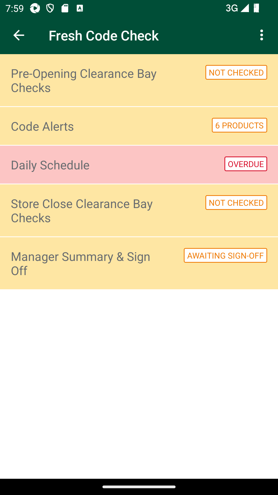
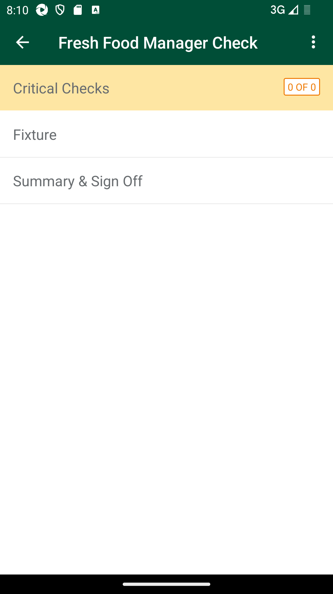
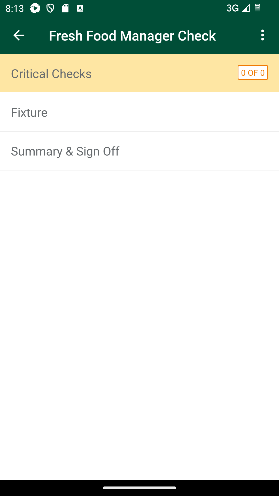
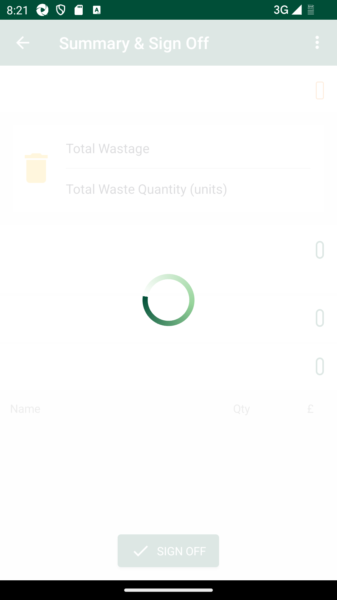
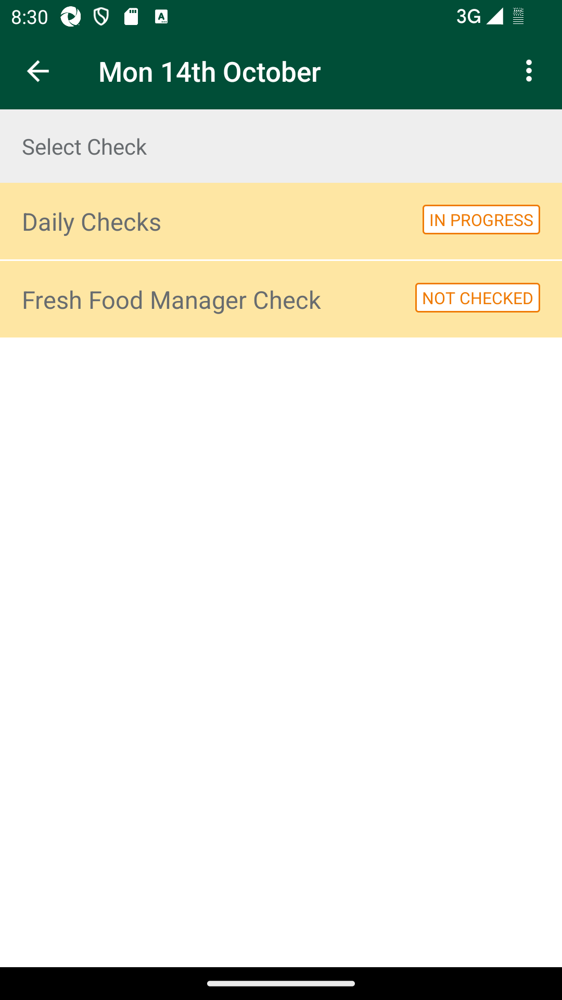
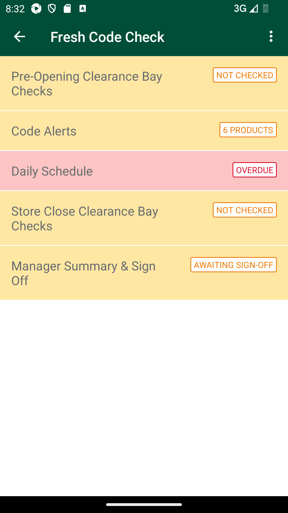
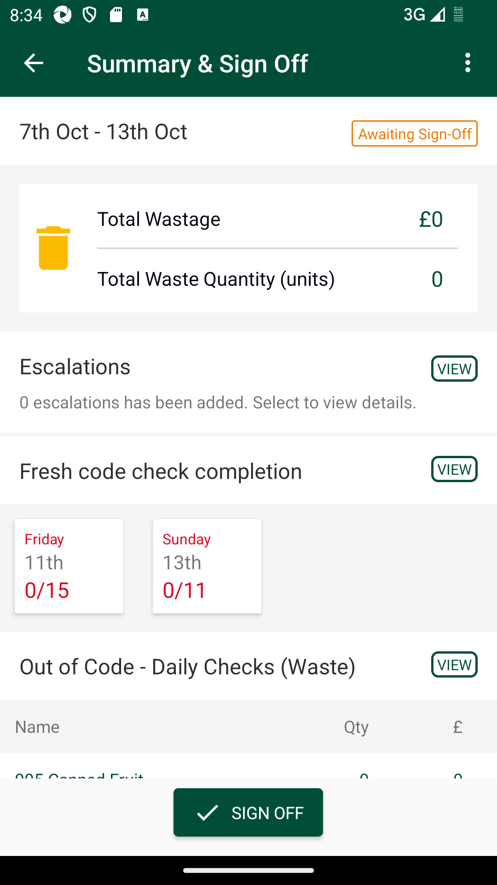
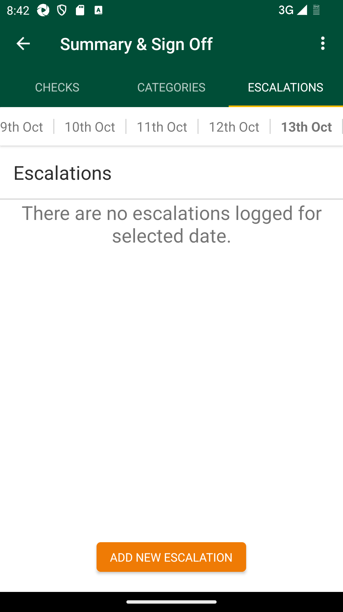

-
Verify Fresh Food Manager Check - Summary in Fresh code check
1:16:44 PM / 00:56:55:601 Fail
Verify Fresh Food Manager Check - Summary in Fresh code check
10.14.2024 1:16:44 PM 10.14.2024 2:13:40 PM 00:56:55:601 · #test-id=1@regression @fccSummarySignOffFailUAT_54 Verify After clicking on 'Fresh code check completion', screen will be redirected to Check Completion Summary tab and following fields should be displayed.1)Previous Date Check with Status 2)Filtering symbol 3)List of Checks with check boxFailUAT_54 Verify After clicking on 'Fresh code check completion', screen will be redirected to Check Completion Summary tab and following fields should be displayed.1)Previous Date Check with Status 2)Filtering symbol 3)List of Checks with check boxWhen I enter Username and Password for SMA Manager userAnd I click on login button for SMAThen I click on the main menu "Code Checking"Then I click on "Fresh Code Check"Then I click on "Daily Schedule"com.morrisons.common.action.Hook.afterScenario(io.cucumber.java.Scenario)
Then I Scroll down on Daily schedule pageStep skippedAnd I Select Daily schedule for "Previous Date"Step skippedThen I click on "Fresh Food Manager Check"Step skippedAnd I verify Critical Check,Fixture,Promotion and Warehouse are displayedStep skippedThen I click on "Summary & Sign Off"Step skippedThen I verify Summary screen is displayedStep skippedWhen I click on Fresh check code completionStep skippedAnd I verify three tabs Checks, Categories and Escalations are displayedStep skippedAnd I verify lists of Checks with checkbox are displayedStep skippedThen I click on Check completion filter symbolStep skippedAnd I verify All checks, completed checks and Incomplete checks options are displayedStep skippedFailUAT_56 Verify when user will be able to filter respective checks from the check summary screenFailUAT_56 Verify when user will be able to filter respective checks from the check summary screenWhen I enter Username and Password for SMA Manager userAnd I click on login button for SMAThen I click on the main menu "Code Checking"Then I click on "Fresh Code Check"Then I click on "Daily Schedule"Then I Scroll down on Daily schedule pageAnd I Select Daily schedule for "Previous Date"Then I click on "Fresh Food Manager Check"And I verify Critical Check,Fixture,Promotion and Warehouse are displayedcom.morrisons.common.action.Hook.afterScenario(io.cucumber.java.Scenario)Then I click on "Summary & Sign Off"Step skippedWhen I click on Fresh check code completionStep skippedAnd I verify three tabs Checks, Categories and Escalations are displayedStep skippedAnd I verify lists of Checks with checkbox are displayedStep skippedThen I click on Check completion filter symbolStep skippedAnd I verify All checks, completed checks and Incomplete checks options are displayedStep skippedThen I click on All checks option from Check completion filterStep skippedAnd I verify screen should display all the list of checks completed or IncompleteStep skippedThen I click on Check completion filter symbolStep skippedThen I click on Completed checks option from Check completion filterStep skippedAnd I verify screen should display only the list of checks which are completedStep skippedThen I click on Check completion filter symbolStep skippedThen I click on Incomplete checks option from Check completion filterStep skippedAnd I verify screen should display only the list of checks which are IncompleteStep skippedFailUAT_57 Daily Check_Verify when user clicks on 'Out of Code - First Check (Waste)'.Then, should navigated to First check sub menu under Categories tab and details.FailUAT_57 Daily Check_Verify when user clicks on 'Out of Code - First Check (Waste)'.Then, should navigated to First check sub menu under Categories tab and details.When I enter Username and Password for SMA Manager userAnd I click on login button for SMAThen I click on the main menu "Code Checking"Then I click on "Fresh Code Check"Then I click on "Daily Schedule"Then I Scroll down on Daily schedule pageAnd I Select Daily schedule for "Previous Date"Then I click on "Fresh Food Manager Check"And I verify Critical Check,Fixture,Promotion and Warehouse are displayedcom.morrisons.common.action.Hook.afterScenario(io.cucumber.java.Scenario)Then I click on "Summary & Sign Off"Step skippedAnd I verify Out of Code-First Check Waste with top three departments according to wastage qty which belongs to first check along with there qty and wastage amount are displayedStep skippedThen I click on Out of Code-First Check Waste on summary screenStep skippedAnd I verify Daily check, Afternoon Check, FM Check and Code AlertsStep skippedAnd I verify Category completion with list of departments with quantity and price are displayedStep skippedThen I click on Category completion sorting symbolStep skippedAnd I verify two sorting orders Lowest to Highest Price and Highest to Lowest Price are displayedStep skippedThen I click on Category completion sorting symbol to close the filterStep skippedAnd I verify in the list of departments the sorting order should be, by default Critical Checks would be first, Promotions would be second and Warehouse would be thirdStep skippedFailUAT_58 Daily Check_I click on Afternoon check tab on Category completion table Check_Verify when user clicks on Critical checks/Promotions/Warehouse. Then, will be able to view list of all the products scanned under respective location, irrespective of the action performed and total count of products present in the list.FailUAT_58 Daily Check_I click on Afternoon check tab on Category completion table Check_Verify when user clicks on Critical checks/Promotions/Warehouse. Then, will be able to view list of all the products scanned under respective location, irrespective of the action performed and total count of products present in the list.When I enter Username and Password for SMA Manager userAnd I click on login button for SMAThen I click on the main menu "Code Checking"Then I click on "Fresh Code Check"Then I click on "Daily Schedule"Then I Scroll down on Daily schedule pageAnd I Select Daily schedule for "Previous Date"Then I click on "Fresh Food Manager Check"And I verify Critical Check,Fixture,Promotion and Warehouse are displayedcom.morrisons.common.action.Hook.afterScenario(io.cucumber.java.Scenario)Then I click on "Summary & Sign Off"Step skippedThen I verify Summary screen is displayedStep skippedAnd I verify Out of Code-First Check Waste on summary screen is displayedStep skippedThen I click on Out of Code-First Check Waste on summary screenStep skippedThen I click on Daily check tab on Category completion tableStep skippedThen I click on "Critical Checks"Step skippedAnd I verify Product list is displayedStep skippedThen I click on back buttonStep skippedThen I click on "Promotions"Step skippedAnd I verify Product list is displayedStep skippedThen I click on back buttonStep skippedThen I click on "Warehouse"Step skippedAnd I verify Product list is displayedStep skippedThen I click on back buttonStep skippedFailUAT_59 Daily Check_Verify when user clicks on any department name. Then, will be able to view list of aisles under the respective department with rotation rating details if department is completed.FailUAT_59 Daily Check_Verify when user clicks on any department name. Then, will be able to view list of aisles under the respective department with rotation rating details if department is completed.When I enter Username and Password for SMA Manager userAnd I click on login button for SMAThen I click on the main menu "Code Checking"Then I click on "Fresh Code Check"Then I click on "Daily Schedule"Then I Scroll down on Daily schedule pageAnd I Select Daily schedule for "Previous Date"Then I click on "Fresh Food Manager Check"And I verify Critical Check,Fixture,Promotion and Warehouse are displayedcom.morrisons.common.action.Hook.afterScenario(io.cucumber.java.Scenario)Then I click on "Summary & Sign Off"Step skippedThen I verify Summary screen is displayedStep skippedAnd I verify Out of Code-First Check Waste on summary screen is displayedStep skippedThen I click on Out of Code-First Check Waste on summary screenStep skippedThen I click on Daily check tab on Category completion tableStep skippedThen I click on any departmentStep skippedAnd I verify list of aisles under respective department with rotation rating details are displayedStep skippedFailUAT_60 Afternoon Check_Verify when user clicks on Critical checks/Promotions/Warehouse. Then, will be able to view list of all the products scanned under respective location, irrespective of the action performed and total count of products present in the list.FailUAT_60 Afternoon Check_Verify when user clicks on Critical checks/Promotions/Warehouse. Then, will be able to view list of all the products scanned under respective location, irrespective of the action performed and total count of products present in the list.When I enter Username and Password for SMA Manager userAnd I click on login button for SMAThen I click on the main menu "Code Checking"Then I click on "Fresh Code Check"Then I click on "Daily Schedule"Then I Scroll down on Daily schedule pageAnd I Select Daily schedule for "Previous Date"Then I click on "Fresh Food Manager Check"And I verify Critical Check,Fixture,Promotion and Warehouse are displayedcom.morrisons.common.action.Hook.afterScenario(io.cucumber.java.Scenario)
Then I click on "Summary & Sign Off"Step skippedThen I verify Summary screen is displayedStep skippedAnd I verify Out of Code-First Check Waste on summary screen is displayedStep skippedThen I click on Out of Code-First Check Waste on summary screenStep skippedThen I click on Afternoon check tab on Category completion tableStep skippedThen I click on "Critical Checks"Step skippedAnd I verify Product list is displayedStep skippedThen I click on back buttonStep skippedThen I click on "Promotions"Step skippedAnd I verify Product list is displayedStep skippedThen I click on back buttonStep skippedThen I click on "Warehouse"Step skippedAnd I verify Product list is displayedStep skippedThen I click on back buttonStep skippedFailUAT_61 Afternoon Check_Verify user clicks on any department name. Then, will be able to view list of aisles under the respective department with rotation rating details if department is completed.FailUAT_61 Afternoon Check_Verify user clicks on any department name. Then, will be able to view list of aisles under the respective department with rotation rating details if department is completed.When I enter Username and Password for SMA Manager userAnd I click on login button for SMAThen I click on the main menu "Code Checking"Then I click on "Fresh Code Check"Then I click on "Daily Schedule"Then I Scroll down on Daily schedule pageAnd I Select Daily schedule for "Previous Date"Then I click on "Fresh Food Manager Check"And I verify Critical Check,Fixture,Promotion and Warehouse are displayedcom.morrisons.common.action.Hook.afterScenario(io.cucumber.java.Scenario)
Then I click on "Summary & Sign Off"Step skippedThen I verify Summary screen is displayedStep skippedAnd I verify Out of Code-First Check Waste on summary screen is displayedStep skippedThen I click on Out of Code-First Check Waste on summary screenStep skippedThen I click on Afternoon check tab on Category completion tableStep skippedThen I click on any departmentStep skippedAnd I verify list of aisles under respective department with rotation rating details are displayedStep skippedFailUAT_62 Fresh Food Manager Check_Verify when user clicks on Critical checks/Promotions/Warehouse. Then, will be able to view list of all the products scanned under respective location, irrespective of the action performed and total count of products present in the list.FailUAT_62 Fresh Food Manager Check_Verify when user clicks on Critical checks/Promotions/Warehouse. Then, will be able to view list of all the products scanned under respective location, irrespective of the action performed and total count of products present in the list.When I enter Username and Password for SMA Manager userAnd I click on login button for SMAThen I click on the main menu "Code Checking"Then I click on "Fresh Code Check"Then I click on "Daily Schedule"Then I Scroll down on Daily schedule pageAnd I Select Daily schedule for "Previous Date"Then I click on "Fresh Food Manager Check"And I verify Critical Check,Fixture,Promotion and Warehouse are displayedcom.morrisons.common.action.Hook.afterScenario(io.cucumber.java.Scenario)Then I click on "Summary & Sign Off"Step skippedThen I verify Summary screen is displayedStep skippedAnd I verify Out of Code-First Check Waste on summary screen is displayedStep skippedThen I click on Out of Code-First Check Waste on summary screenStep skippedThen I click on FM check tab on Category completion tableStep skippedThen I click on "Critical Checks"Step skippedAnd I verify Product list is displayedStep skippedThen I click on back buttonStep skippedThen I click on "Promotions"Step skippedAnd I verify Product list is displayedStep skippedThen I click on back buttonStep skippedThen I click on "Warehouse"Step skippedAnd I verify Product list is displayedStep skippedThen I click on back buttonStep skippedFailUAT_63 Fresh Food Manager Check_Verify when user clicks on any department name. Then, will be able to view list of aisles under the respective department with rotation rating details if department is completed.FailUAT_63 Fresh Food Manager Check_Verify when user clicks on any department name. Then, will be able to view list of aisles under the respective department with rotation rating details if department is completed.When I enter Username and Password for SMA Manager userAnd I click on login button for SMAThen I click on the main menu "Code Checking"Then I click on "Fresh Code Check"Then I click on "Daily Schedule"Then I Scroll down on Daily schedule pageAnd I Select Daily schedule for "Previous Date"Then I click on "Fresh Food Manager Check"And I verify Critical Check,Fixture,Promotion and Warehouse are displayedcom.morrisons.common.action.Hook.afterScenario(io.cucumber.java.Scenario)Then I click on "Summary & Sign Off"Step skippedThen I verify Summary screen is displayedStep skippedAnd I verify Out of Code-First Check Waste on summary screen is displayedStep skippedThen I click on Out of Code-First Check Waste on summary screenStep skippedThen I click on FM check tab on Category completion tableStep skippedThen I click on any departmentStep skippedAnd I verify list of aisles under respective department with rotation rating details are displayedStep skippedFailUAT_68 Verify when user navigates to Fresh Food manager Check Summary screen.Then, at the bottom of the summary screen, below 'Out of Code - First Check (Waste)' label, user will be able to view top 3 First Check departments which has maximum quantity actioned as Wastage with wastage quantity and wasted priceFailUAT_68 Verify when user navigates to Fresh Food manager Check Summary screen.Then, at the bottom of the summary screen, below 'Out of Code - First Check (Waste)' label, user will be able to view top 3 First Check departments which has maximum quantity actioned as Wastage with wastage quantity and wasted priceWhen I enter Username and Password for SMA Manager userAnd I click on login button for SMAThen I click on the main menu "Code Checking"Then I click on "Fresh Code Check"Then I click on "Daily Schedule"Then I Scroll down on Daily schedule pageAnd I Select Daily schedule for "Previous Date"Then I click on "Fresh Food Manager Check"Then I click on "Summary & Sign Off"Then I verify Summary screen is displayedAnd I verify Out of Code-First Check Waste on summary screen is displayedcom.morrisons.common.action.Hook.afterScenario(io.cucumber.java.Scenario)
And I verify below Out of Code - Daily Checks Waste label, department list is displayedStep skippedAnd I verify top 3 First Check departments which has maximum quantity actioned as Wastage with wastage quantity and wasted price are displayedStep skippedThen I click on any department on listStep skippedAnd I verify Category completion with list of departments with quantity and price are displayedStep skippedFailUAT_69 Verify on clicking the Sign-off button, Sign-off Confirmation page.Then, summary screen for Fresh Food Manager daily sign off should display the below header and content before confirming the sign off.FailUAT_69 Verify on clicking the Sign-off button, Sign-off Confirmation page.Then, summary screen for Fresh Food Manager daily sign off should display the below header and content before confirming the sign off.When I enter Username and Password for SMA Manager userAnd I click on login button for SMAThen I click on the main menu "Code Checking"Then I click on "Fresh Code Check"Then I click on "Daily Schedule"Then I Scroll down on Daily schedule pageAnd I Select Daily schedule for "Previous Date"Then I click on "Fresh Food Manager Check"And I verify Critical Check,Fixture,Promotion and Warehouse are displayedcom.morrisons.common.action.Hook.afterScenario(io.cucumber.java.Scenario)Then I click on "Summary & Sign Off"Step skippedThen I verify Sign off button is displayedStep skippedAnd I click on Sign off buttonStep skippedThen I verify content on Sign off pageStep skippedFailUAT_70 Verify When user clicks on Summary. Then, should view previous date in header with status as 'Signed-Off', if fresh food manager signs off the previous date checkFailUAT_70 Verify When user clicks on Summary. Then, should view previous date in header with status as 'Signed-Off', if fresh food manager signs off the previous date checkWhen I enter Username and Password for SMA Manager userAnd I click on login button for SMAThen I click on the main menu "Code Checking"Then I click on "Fresh Code Check"Then I click on "Daily Schedule"Then I Scroll down on Daily schedule pageAnd I Select Daily schedule for "Previous Date"Then I click on "Fresh Food Manager Check"And I verify Critical Check,Fixture,Promotion and Warehouse are displayedcom.morrisons.common.action.Hook.afterScenario(io.cucumber.java.Scenario)Then I click on "Summary & Sign Off"Step skippedAnd I verify previous day header status as "In Progress"Step skippedThen I verify Sign off button is displayedStep skippedAnd I click on Sign off buttonStep skippedThen I verify content on Sign off pageStep skippedAnd I select all checkboxes on Sign off pageStep skippedAnd I click on Sign off buttonStep skippedAnd I verify previous day header status as "Signed Off"Step skippedFailTo create escalation - Complete the department location with Poor rating.FailTo create escalation - Complete the department location with Poor rating.When I enter Username and Password for SMA Manager userAnd I click on login button for SMAThen I click on the main menu "Code Checking"Then I click on "Fresh Code Check"Then I click on "Daily Schedule"Then I Scroll down on Daily schedule pageAnd I Select Daily schedule for "Current Date"Then I click on "Daily Checks"And I verify Critical Check,Fixture,Promotion and Warehouse are displayedAnd I get "Fixture" statusThen I click on "Fixture"And I verify Aisle list is displayedThen I complte the department with Poor ratingAnd I click on back buttonAnd I click on back buttonThen I click on "Afternoon Checks"com.morrisons.common.action.Hook.afterScenario(io.cucumber.java.Scenario)
And I verify Critical Check,Fixture,Promotion and Warehouse are displayedStep skippedAnd I get "Fixture" statusStep skippedThen I click on "Fixture"Step skippedAnd I verify Aisle list is displayedStep skippedThen I complte the department with Poor ratingStep skippedFailUAT_72_Verify user should be able to view Manager Summary & Sign Off sub-menu with 'Awaiting Sign-Off' status.FailUAT_72_Verify user should be able to view Manager Summary & Sign Off sub-menu with 'Awaiting Sign-Off' status.When I enter Username and Password for SMA Manager userAnd I click on login button for SMAThen I click on the main menu "Code Checking"Then I click on "Fresh Code Check"Then I verify "Manager Summary & Sign Off" is displayedWhen I verify "Manager Summary & Sign Off" is displayed with status as 'Awaiting Sign-Off'com.morrisons.common.action.Hook.afterScenario(io.cucumber.java.Scenario)
FailUAT_73_Verify on Manager Summary & Sign Off screen user clicks on Summary and verify summary page header, Escalations with status as 'View' and message, Fresh code check completion, Out of Code-First Check (Waste) and top three departments according to wastage qty details are displayedFailUAT_73_Verify on Manager Summary & Sign Off screen user clicks on Summary and verify summary page header, Escalations with status as 'View' and message, Fresh code check completion, Out of Code-First Check (Waste) and top three departments according to wastage qty details are displayedWhen I enter Username and Password for SMA Manager userAnd I click on login button for SMAThen I click on the main menu "Code Checking"Then I click on "Fresh Code Check"Then I click on "Manager Summary & Sign Off"And I verify summary page header should display previous week date range along with status as 'Awaiting Sign-Off'And I verify Escalations with status as 'View' and message are displayedAnd I verify Fresh code chech completion with 7 day titles are displayedcom.morrisons.common.action.Hook.afterScenario(io.cucumber.java.Scenario)
Then I scroll down to get the latest schduleStep skippedAnd I verify Out of Code-First Check Waste with top three departments according to wastage qty which belongs to first check along with there qty and wastage amount are displayedStep skippedPassUAT_74_Verify on Manager Summary & Sign Off screen user clicks on Summary page header should display previous week date range along with status as 'Awaiting Sign-Off'.PassUAT_74_Verify on Manager Summary & Sign Off screen user clicks on Summary page header should display previous week date range along with status as 'Awaiting Sign-Off'.When I enter Username and Password for SMA Manager userAnd I click on login button for SMAThen I click on the main menu "Code Checking"Then I click on "Fresh Code Check"Then I verify "Manager Summary & Sign Off" is displayedThen I click on "Manager Summary & Sign Off"And I verify summary page header should display previous week date range along with status as 'Awaiting Sign-Off'PassUAT_75_Verify on Manager Summary & Sign Off screen user clicks on Summary. Then, summary Page should display the Total Wastage Amount in £ Pound symbol including all the checks i.e First Check,Second and Fresh manager check.PassUAT_75_Verify on Manager Summary & Sign Off screen user clicks on Summary. Then, summary Page should display the Total Wastage Amount in £ Pound symbol including all the checks i.e First Check,Second and Fresh manager check.When I enter Username and Password for SMA Manager userAnd I click on login button for SMAThen I click on the main menu "Code Checking"Then I click on "Fresh Code Check"Then I click on "Manager Summary & Sign Off"And I verify Total Wastage Amount in £ Pound symbol is displayedPassUAT_76_Verify on Manager Summary & Sign Off screen user verify on Escalations tab list with escalations with View/Incomplete status are displayed.PassUAT_76_Verify on Manager Summary & Sign Off screen user verify on Escalations tab list with escalations with View/Incomplete status are displayed.When I enter Username and Password for SMA Manager userAnd I click on login button for SMAThen I click on the main menu "Code Checking"Then I click on "Fresh Code Check"Then I click on "Manager Summary & Sign Off"And I verify Escalations with status as 'View' and message are displayedThen I click on Escalation View buttonAnd I verify Escalations page is displayedAnd I verify Date schedules are displayedAnd I verify Escalations list with details is displayedFailUAT_77_Verify on Manager Summary & Sign Off screen user select one of the escalations that are in "Incomplete" Status then verify Next step screen. Perform actions and complete the escalation.FailUAT_77_Verify on Manager Summary & Sign Off screen user select one of the escalations that are in "Incomplete" Status then verify Next step screen. Perform actions and complete the escalation.When I enter Username and Password for SMA Manager userAnd I click on login button for SMAThen I click on the main menu "Code Checking"Then I click on "Fresh Code Check"Then I click on "Manager Summary & Sign Off"And I verify Escalations with status as 'View' and message are displayedThen I click on Escalation View buttonAnd I verify Escalations page is displayedAnd I verify Date schedules are displayedThen I select day from the Day schedule listAnd I verify Escalations list with details is displayedThen I select one escalations with Incomplete statuscom.morrisons.common.action.Hook.afterScenario(io.cucumber.java.Scenario)
And I verify Next steps screen is displayedStep skippedThen I scroll down on the pageStep skippedAnd I added commentStep skippedWhen I click on Save buttonStep skippedThen I verify user is redirected to escalations list screenStep skippedAnd I verify respective escalation is at the top with latest edited detailsStep skippedFailUAT_78_Verify on Manager Summary & Sign Off screen user should ADD comments in Escalations.FailUAT_78_Verify on Manager Summary & Sign Off screen user should ADD comments in Escalations.When I enter Username and Password for SMA Manager userAnd I click on login button for SMAThen I click on the main menu "Code Checking"Then I click on "Fresh Code Check"Then I click on "Manager Summary & Sign Off"And I verify Escalations with status as 'View' and message are displayedThen I click on Escalation View buttonAnd I verify Escalations page is displayedAnd I verify Date schedules are displayedThen I select day from the Day schedule listAnd I verify Escalations list with details is displayedThen I select one escalations with Incomplete statuscom.morrisons.common.action.Hook.afterScenario(io.cucumber.java.Scenario)And I verify Next steps screen is displayedStep skippedThen I scroll down on the pageStep skippedAnd I added commentStep skippedWhen I click on Save buttonStep skippedThen I verify user is redirected to escalations list screenStep skippedAnd I verify respective escalation is at the top with latest edited detailsStep skippedFailUAT_79_Verify on Manager Summary & Sign Off screen user should EDIT comments in Escalations.FailUAT_79_Verify on Manager Summary & Sign Off screen user should EDIT comments in Escalations.When I enter Username and Password for SMA Manager userAnd I click on login button for SMAThen I click on the main menu "Code Checking"Then I click on "Fresh Code Check"Then I click on "Manager Summary & Sign Off"And I verify Escalations with status as 'View' and message are displayedThen I click on Escalation View buttonAnd I verify Escalations page is displayedAnd I verify Date schedules are displayedThen I select day from the Day schedule listAnd I verify Escalations list with details is displayedThen I select one escalations with Incomplete statuscom.morrisons.common.action.Hook.afterScenario(io.cucumber.java.Scenario)And I verify Next steps screen is displayedStep skippedThen I scroll down on the pageStep skippedAnd I edited the commentStep skippedThen I scroll down on the pageStep skippedWhen I click on Save buttonStep skippedThen I verify user is redirected to escalations list screenStep skippedAnd I verify respective escalation is at the top with latest edited detailsStep skippedFailUAT_80_Verify on Manager Summary & Sign Off screen user should EDIT comments in Escalations for Previous weekFailUAT_80_Verify on Manager Summary & Sign Off screen user should EDIT comments in Escalations for Previous weekWhen I enter Username and Password for SMA Manager userAnd I click on login button for SMAThen I click on the main menu "Code Checking"Then I click on "Fresh Code Check"Then I click on "Manager Summary & Sign Off"Then I verify Summary screen is displayedWhen I click on Fresh check code completionAnd I verify three tabs Checks, Categories and Escalations are displayedThen I click on Escalations tabAnd I verify Date schedules are displayedAnd I verify Escalations list with details is displayedThen I click on day schdule for Previous weekAnd I verify Escalations list with details is displayedThen I click on View for one escalation from listcom.morrisons.common.action.Hook.afterScenario(io.cucumber.java.Scenario)And I verify Next steps screen is displayedStep skippedThen I scroll downStep skippedAnd I edited commentStep skippedThen I scroll downStep skippedWhen I click on Save buttonStep skippedThen I verify user is redirected to escalations list screenStep skippedAnd I verify respective escalation is at the top with latest edited detailsStep skippedPassUAT_81 Manager Summary & Sign Off screen_Verify when user should be able to view Day wise tabs with label and after clicking on each day tabs, it will navigate to the Category Completion Summary screen of First Check.PassUAT_81 Manager Summary & Sign Off screen_Verify when user should be able to view Day wise tabs with label and after clicking on each day tabs, it will navigate to the Category Completion Summary screen of First Check.When I enter Username and Password for SMA Manager userAnd I click on login button for SMAThen I click on the main menu "Code Checking"Then I click on "Fresh Code Check"Then I click on "Manager Summary & Sign Off"Then I verify Summary screen is displayedAnd I verify Day tiles with Day, Date and Wastage values are presentThen I click on Day tileAnd I verify screen navigate to the Category Completion Summary screen of First CheckPassUAT_82 Manager Summary & Sign Off screen_Verify when clicks on 'Out of Code - First Check (Waste)'. Then, will be navigated to First check sub menu under Categories tab and verify the screen.PassUAT_82 Manager Summary & Sign Off screen_Verify when clicks on 'Out of Code - First Check (Waste)'. Then, will be navigated to First check sub menu under Categories tab and verify the screen.When I enter Username and Password for SMA Manager userAnd I click on login button for SMAThen I click on the main menu "Code Checking"Then I click on "Fresh Code Check"Then I click on "Manager Summary & Sign Off"Then I verify Summary screen is displayedAnd I verify Out of Code-First Check Waste on summary screen is displayedThen I click on Out of Code-First Check Waste on summary screenAnd I verify Daily check, Afternoon Check, FM Check and Code AlertsAnd I verify Category completion with list of departments with quantity and price are displayedThen I click on Category completion sorting symbolAnd I verify two sorting orders Lowest to Highest Price and Highest to Lowest Price are displayedThen I click on Category completion sorting symbol to close the filterThen I select day from the Day schedule listAnd I verify in the list of departments the sorting order should be, by default Critical Checks would be first, Promotions would be second and Warehouse would be third
-
java.lang.AssertionError
2 tests
java.lang.AssertionError
2 failedStatus Timestamp TestName Fail 13:40:57 PM And I verify Out of Code-First Check Waste on summary screen is displayed Verify Fresh Food Manager Check - Summary in Fresh code check.UAT_68 Verify when user navigates to Fresh Food manager Check Summary screen.Then, at the bottom of the summary screen, below 'Out of Code - First Check (Waste)' label, user will be able to view top 3 First Check departments which has maximum quantity actioned as Wastage with wastage quantity and wasted price.And I verify Out of Code-First Check Waste on summary screen is displayedFail 13:51:39 PM When I verify "Manager Summary & Sign Off" is displayed with status as 'Awaiting Sign-Off' Verify Fresh Food Manager Check - Summary in Fresh code check.UAT_72_Verify user should be able to view Manager Summary & Sign Off sub-menu with 'Awaiting Sign-Off' status..When I verify "Manager Summary & Sign Off" is displayed with status as 'Awaiting Sign-Off' -
org.openqa.selenium.NoSuchElementException
17 tests
org.openqa.selenium.NoSuchElementException
17 failedStatus Timestamp TestName Fail 13:18:24 PM Then I click on "Daily Schedule" Verify Fresh Food Manager Check - Summary in Fresh code check.UAT_54 Verify After clicking on 'Fresh code check completion', screen will be redirected to Check Completion Summary tab and following fields should be displayed.1)Previous Date Check with Status 2)Filtering symbol 3)List of Checks with check box.Then I click on "Daily Schedule"Fail 13:21:10 PM And I verify Critical Check,Fixture,Promotion and Warehouse are displayed Verify Fresh Food Manager Check - Summary in Fresh code check.UAT_56 Verify when user will be able to filter respective checks from the check summary screen.And I verify Critical Check,Fixture,Promotion and Warehouse are displayedFail 13:23:18 PM And I verify Critical Check,Fixture,Promotion and Warehouse are displayed Verify Fresh Food Manager Check - Summary in Fresh code check.UAT_57 Daily Check_Verify when user clicks on 'Out of Code - First Check (Waste)'.Then, should navigated to First check sub menu under Categories tab and details..And I verify Critical Check,Fixture,Promotion and Warehouse are displayedFail 13:25:27 PM And I verify Critical Check,Fixture,Promotion and Warehouse are displayed Verify Fresh Food Manager Check - Summary in Fresh code check.UAT_58 Daily Check_I click on Afternoon check tab on Category completion table Check_Verify when user clicks on Critical checks/Promotions/Warehouse. Then, will be able to view list of all the products scanned under respective location, irrespective of the action performed and total count of products present in the list..And I verify Critical Check,Fixture,Promotion and Warehouse are displayedFail 13:27:41 PM And I verify Critical Check,Fixture,Promotion and Warehouse are displayed Verify Fresh Food Manager Check - Summary in Fresh code check.UAT_59 Daily Check_Verify when user clicks on any department name. Then, will be able to view list of aisles under the respective department with rotation rating details if department is completed..And I verify Critical Check,Fixture,Promotion and Warehouse are displayedFail 13:30:00 PM And I verify Critical Check,Fixture,Promotion and Warehouse are displayed Verify Fresh Food Manager Check - Summary in Fresh code check.UAT_60 Afternoon Check_Verify when user clicks on Critical checks/Promotions/Warehouse. Then, will be able to view list of all the products scanned under respective location, irrespective of the action performed and total count of products present in the list..And I verify Critical Check,Fixture,Promotion and Warehouse are displayedFail 13:32:18 PM And I verify Critical Check,Fixture,Promotion and Warehouse are displayed Verify Fresh Food Manager Check - Summary in Fresh code check.UAT_61 Afternoon Check_Verify user clicks on any department name. Then, will be able to view list of aisles under the respective department with rotation rating details if department is completed..And I verify Critical Check,Fixture,Promotion and Warehouse are displayedFail 13:34:31 PM And I verify Critical Check,Fixture,Promotion and Warehouse are displayed Verify Fresh Food Manager Check - Summary in Fresh code check.UAT_62 Fresh Food Manager Check_Verify when user clicks on Critical checks/Promotions/Warehouse. Then, will be able to view list of all the products scanned under respective location, irrespective of the action performed and total count of products present in the list..And I verify Critical Check,Fixture,Promotion and Warehouse are displayedFail 13:36:40 PM And I verify Critical Check,Fixture,Promotion and Warehouse are displayed Verify Fresh Food Manager Check - Summary in Fresh code check.UAT_63 Fresh Food Manager Check_Verify when user clicks on any department name. Then, will be able to view list of aisles under the respective department with rotation rating details if department is completed..And I verify Critical Check,Fixture,Promotion and Warehouse are displayedFail 13:43:11 PM And I verify Critical Check,Fixture,Promotion and Warehouse are displayed Verify Fresh Food Manager Check - Summary in Fresh code check.UAT_69 Verify on clicking the Sign-off button, Sign-off Confirmation page.Then, summary screen for Fresh Food Manager daily sign off should display the below header and content before confirming the sign off..And I verify Critical Check,Fixture,Promotion and Warehouse are displayedFail 13:45:31 PM And I verify Critical Check,Fixture,Promotion and Warehouse are displayed Verify Fresh Food Manager Check - Summary in Fresh code check.UAT_70 Verify When user clicks on Summary. Then, should view previous date in header with status as 'Signed-Off', if fresh food manager signs off the previous date check.And I verify Critical Check,Fixture,Promotion and Warehouse are displayedFail 13:49:16 PM Then I click on "Afternoon Checks" Verify Fresh Food Manager Check - Summary in Fresh code check.To create escalation - Complete the department location with Poor rating..Then I click on "Afternoon Checks"Fail 13:53:29 PM And I verify Fresh code chech completion with 7 day titles are displayed Verify Fresh Food Manager Check - Summary in Fresh code check.UAT_73_Verify on Manager Summary & Sign Off screen user clicks on Summary and verify summary page header, Escalations with status as 'View' and message, Fresh code check completion, Out of Code-First Check (Waste) and top three departments according to wastage qty details are displayed.And I verify Fresh code chech completion with 7 day titles are displayedFail 14:01:40 PM Then I select one escalations with Incomplete status Verify Fresh Food Manager Check - Summary in Fresh code check.UAT_77_Verify on Manager Summary & Sign Off screen user select one of the escalations that are in "Incomplete" Status then verify Next step screen. Perform actions and complete the escalation..Then I select one escalations with Incomplete statusFail 14:04:07 PM Then I select one escalations with Incomplete status Verify Fresh Food Manager Check - Summary in Fresh code check.UAT_78_Verify on Manager Summary & Sign Off screen user should ADD comments in Escalations..Then I select one escalations with Incomplete statusFail 14:06:42 PM Then I select one escalations with Incomplete status Verify Fresh Food Manager Check - Summary in Fresh code check.UAT_79_Verify on Manager Summary & Sign Off screen user should EDIT comments in Escalations..Then I select one escalations with Incomplete statusFail 14:09:24 PM Then I click on View for one escalation from list Verify Fresh Food Manager Check - Summary in Fresh code check.UAT_80_Verify on Manager Summary & Sign Off screen user should EDIT comments in Escalations for Previous week.Then I click on View for one escalation from list
-
@fccSummarySignOff
25 tests
@fccSummarySignOff
5 passed 20 failedStatus Timestamp TestName Fail 13:16:44 PM Verify Fresh Food Manager Check - Summary in Fresh code check Fail 13:16:44 PM UAT_54 Verify After clicking on 'Fresh code check completion', screen will be redirected to Check Completion Summary tab and following fields should be displayed.1)Previous Date Check with Status 2)Filtering symbol 3)List of Checks with check box Verify Fresh Food Manager Check - Summary in Fresh code check.UAT_54 Verify After clicking on 'Fresh code check completion', screen will be redirected to Check Completion Summary tab and following fields should be displayed.1)Previous Date Check with Status 2)Filtering symbol 3)List of Checks with check boxFail 13:19:12 PM UAT_56 Verify when user will be able to filter respective checks from the check summary screen Verify Fresh Food Manager Check - Summary in Fresh code check.UAT_56 Verify when user will be able to filter respective checks from the check summary screenFail 13:21:40 PM UAT_57 Daily Check_Verify when user clicks on 'Out of Code - First Check (Waste)'.Then, should navigated to First check sub menu under Categories tab and details. Verify Fresh Food Manager Check - Summary in Fresh code check.UAT_57 Daily Check_Verify when user clicks on 'Out of Code - First Check (Waste)'.Then, should navigated to First check sub menu under Categories tab and details.Fail 13:23:48 PM UAT_58 Daily Check_I click on Afternoon check tab on Category completion table Check_Verify when user clicks on Critical checks/Promotions/Warehouse. Then, will be able to view list of all the products scanned under respective location, irrespective of the action performed and total count of products present in the list. Verify Fresh Food Manager Check - Summary in Fresh code check.UAT_58 Daily Check_I click on Afternoon check tab on Category completion table Check_Verify when user clicks on Critical checks/Promotions/Warehouse. Then, will be able to view list of all the products scanned under respective location, irrespective of the action performed and total count of products present in the list.Fail 13:25:55 PM UAT_59 Daily Check_Verify when user clicks on any department name. Then, will be able to view list of aisles under the respective department with rotation rating details if department is completed. Verify Fresh Food Manager Check - Summary in Fresh code check.UAT_59 Daily Check_Verify when user clicks on any department name. Then, will be able to view list of aisles under the respective department with rotation rating details if department is completed.Fail 13:28:10 PM UAT_60 Afternoon Check_Verify when user clicks on Critical checks/Promotions/Warehouse. Then, will be able to view list of all the products scanned under respective location, irrespective of the action performed and total count of products present in the list. Verify Fresh Food Manager Check - Summary in Fresh code check.UAT_60 Afternoon Check_Verify when user clicks on Critical checks/Promotions/Warehouse. Then, will be able to view list of all the products scanned under respective location, irrespective of the action performed and total count of products present in the list.Fail 13:30:28 PM UAT_61 Afternoon Check_Verify user clicks on any department name. Then, will be able to view list of aisles under the respective department with rotation rating details if department is completed. Verify Fresh Food Manager Check - Summary in Fresh code check.UAT_61 Afternoon Check_Verify user clicks on any department name. Then, will be able to view list of aisles under the respective department with rotation rating details if department is completed.Fail 13:32:48 PM UAT_62 Fresh Food Manager Check_Verify when user clicks on Critical checks/Promotions/Warehouse. Then, will be able to view list of all the products scanned under respective location, irrespective of the action performed and total count of products present in the list. Verify Fresh Food Manager Check - Summary in Fresh code check.UAT_62 Fresh Food Manager Check_Verify when user clicks on Critical checks/Promotions/Warehouse. Then, will be able to view list of all the products scanned under respective location, irrespective of the action performed and total count of products present in the list.Fail 13:35:00 PM UAT_63 Fresh Food Manager Check_Verify when user clicks on any department name. Then, will be able to view list of aisles under the respective department with rotation rating details if department is completed. Verify Fresh Food Manager Check - Summary in Fresh code check.UAT_63 Fresh Food Manager Check_Verify when user clicks on any department name. Then, will be able to view list of aisles under the respective department with rotation rating details if department is completed.Fail 13:37:09 PM UAT_68 Verify when user navigates to Fresh Food manager Check Summary screen.Then, at the bottom of the summary screen, below 'Out of Code - First Check (Waste)' label, user will be able to view top 3 First Check departments which has maximum quantity actioned as Wastage with wastage quantity and wasted price Verify Fresh Food Manager Check - Summary in Fresh code check.UAT_68 Verify when user navigates to Fresh Food manager Check Summary screen.Then, at the bottom of the summary screen, below 'Out of Code - First Check (Waste)' label, user will be able to view top 3 First Check departments which has maximum quantity actioned as Wastage with wastage quantity and wasted priceFail 13:41:15 PM UAT_69 Verify on clicking the Sign-off button, Sign-off Confirmation page.Then, summary screen for Fresh Food Manager daily sign off should display the below header and content before confirming the sign off. Verify Fresh Food Manager Check - Summary in Fresh code check.UAT_69 Verify on clicking the Sign-off button, Sign-off Confirmation page.Then, summary screen for Fresh Food Manager daily sign off should display the below header and content before confirming the sign off.Fail 13:43:41 PM UAT_70 Verify When user clicks on Summary. Then, should view previous date in header with status as 'Signed-Off', if fresh food manager signs off the previous date check Verify Fresh Food Manager Check - Summary in Fresh code check.UAT_70 Verify When user clicks on Summary. Then, should view previous date in header with status as 'Signed-Off', if fresh food manager signs off the previous date checkFail 13:46:03 PM To create escalation - Complete the department location with Poor rating. Verify Fresh Food Manager Check - Summary in Fresh code check.To create escalation - Complete the department location with Poor rating.Fail 13:49:56 PM UAT_72_Verify user should be able to view Manager Summary & Sign Off sub-menu with 'Awaiting Sign-Off' status. Verify Fresh Food Manager Check - Summary in Fresh code check.UAT_72_Verify user should be able to view Manager Summary & Sign Off sub-menu with 'Awaiting Sign-Off' status.Fail 13:51:58 PM UAT_73_Verify on Manager Summary & Sign Off screen user clicks on Summary and verify summary page header, Escalations with status as 'View' and message, Fresh code check completion, Out of Code-First Check (Waste) and top three departments according to wastage qty details are displayed Verify Fresh Food Manager Check - Summary in Fresh code check.UAT_73_Verify on Manager Summary & Sign Off screen user clicks on Summary and verify summary page header, Escalations with status as 'View' and message, Fresh code check completion, Out of Code-First Check (Waste) and top three departments according to wastage qty details are displayedPass 13:53:57 PM UAT_74_Verify on Manager Summary & Sign Off screen user clicks on Summary page header should display previous week date range along with status as 'Awaiting Sign-Off'. Verify Fresh Food Manager Check - Summary in Fresh code check.UAT_74_Verify on Manager Summary & Sign Off screen user clicks on Summary page header should display previous week date range along with status as 'Awaiting Sign-Off'.Pass 13:55:47 PM UAT_75_Verify on Manager Summary & Sign Off screen user clicks on Summary. Then, summary Page should display the Total Wastage Amount in £ Pound symbol including all the checks i.e First Check,Second and Fresh manager check. Verify Fresh Food Manager Check - Summary in Fresh code check.UAT_75_Verify on Manager Summary & Sign Off screen user clicks on Summary. Then, summary Page should display the Total Wastage Amount in £ Pound symbol including all the checks i.e First Check,Second and Fresh manager check.Pass 13:57:43 PM UAT_76_Verify on Manager Summary & Sign Off screen user verify on Escalations tab list with escalations with View/Incomplete status are displayed. Verify Fresh Food Manager Check - Summary in Fresh code check.UAT_76_Verify on Manager Summary & Sign Off screen user verify on Escalations tab list with escalations with View/Incomplete status are displayed.Fail 13:59:39 PM UAT_77_Verify on Manager Summary & Sign Off screen user select one of the escalations that are in "Incomplete" Status then verify Next step screen. Perform actions and complete the escalation. Verify Fresh Food Manager Check - Summary in Fresh code check.UAT_77_Verify on Manager Summary & Sign Off screen user select one of the escalations that are in "Incomplete" Status then verify Next step screen. Perform actions and complete the escalation.Fail 14:02:11 PM UAT_78_Verify on Manager Summary & Sign Off screen user should ADD comments in Escalations. Verify Fresh Food Manager Check - Summary in Fresh code check.UAT_78_Verify on Manager Summary & Sign Off screen user should ADD comments in Escalations.Fail 14:04:36 PM UAT_79_Verify on Manager Summary & Sign Off screen user should EDIT comments in Escalations. Verify Fresh Food Manager Check - Summary in Fresh code check.UAT_79_Verify on Manager Summary & Sign Off screen user should EDIT comments in Escalations.Fail 14:07:11 PM UAT_80_Verify on Manager Summary & Sign Off screen user should EDIT comments in Escalations for Previous week Verify Fresh Food Manager Check - Summary in Fresh code check.UAT_80_Verify on Manager Summary & Sign Off screen user should EDIT comments in Escalations for Previous weekPass 14:09:53 PM UAT_81 Manager Summary & Sign Off screen_Verify when user should be able to view Day wise tabs with label and after clicking on each day tabs, it will navigate to the Category Completion Summary screen of First Check. Verify Fresh Food Manager Check - Summary in Fresh code check.UAT_81 Manager Summary & Sign Off screen_Verify when user should be able to view Day wise tabs with label and after clicking on each day tabs, it will navigate to the Category Completion Summary screen of First Check.Pass 14:11:45 PM UAT_82 Manager Summary & Sign Off screen_Verify when clicks on 'Out of Code - First Check (Waste)'. Then, will be navigated to First check sub menu under Categories tab and verify the screen. Verify Fresh Food Manager Check - Summary in Fresh code check.UAT_82 Manager Summary & Sign Off screen_Verify when clicks on 'Out of Code - First Check (Waste)'. Then, will be navigated to First check sub menu under Categories tab and verify the screen. -
@regression
25 tests
@regression
5 passed 20 failedStatus Timestamp TestName Fail 13:16:44 PM Verify Fresh Food Manager Check - Summary in Fresh code check Fail 13:16:44 PM UAT_54 Verify After clicking on 'Fresh code check completion', screen will be redirected to Check Completion Summary tab and following fields should be displayed.1)Previous Date Check with Status 2)Filtering symbol 3)List of Checks with check box Verify Fresh Food Manager Check - Summary in Fresh code check.UAT_54 Verify After clicking on 'Fresh code check completion', screen will be redirected to Check Completion Summary tab and following fields should be displayed.1)Previous Date Check with Status 2)Filtering symbol 3)List of Checks with check boxFail 13:19:12 PM UAT_56 Verify when user will be able to filter respective checks from the check summary screen Verify Fresh Food Manager Check - Summary in Fresh code check.UAT_56 Verify when user will be able to filter respective checks from the check summary screenFail 13:21:40 PM UAT_57 Daily Check_Verify when user clicks on 'Out of Code - First Check (Waste)'.Then, should navigated to First check sub menu under Categories tab and details. Verify Fresh Food Manager Check - Summary in Fresh code check.UAT_57 Daily Check_Verify when user clicks on 'Out of Code - First Check (Waste)'.Then, should navigated to First check sub menu under Categories tab and details.Fail 13:23:48 PM UAT_58 Daily Check_I click on Afternoon check tab on Category completion table Check_Verify when user clicks on Critical checks/Promotions/Warehouse. Then, will be able to view list of all the products scanned under respective location, irrespective of the action performed and total count of products present in the list. Verify Fresh Food Manager Check - Summary in Fresh code check.UAT_58 Daily Check_I click on Afternoon check tab on Category completion table Check_Verify when user clicks on Critical checks/Promotions/Warehouse. Then, will be able to view list of all the products scanned under respective location, irrespective of the action performed and total count of products present in the list.Fail 13:25:55 PM UAT_59 Daily Check_Verify when user clicks on any department name. Then, will be able to view list of aisles under the respective department with rotation rating details if department is completed. Verify Fresh Food Manager Check - Summary in Fresh code check.UAT_59 Daily Check_Verify when user clicks on any department name. Then, will be able to view list of aisles under the respective department with rotation rating details if department is completed.Fail 13:28:10 PM UAT_60 Afternoon Check_Verify when user clicks on Critical checks/Promotions/Warehouse. Then, will be able to view list of all the products scanned under respective location, irrespective of the action performed and total count of products present in the list. Verify Fresh Food Manager Check - Summary in Fresh code check.UAT_60 Afternoon Check_Verify when user clicks on Critical checks/Promotions/Warehouse. Then, will be able to view list of all the products scanned under respective location, irrespective of the action performed and total count of products present in the list.Fail 13:30:28 PM UAT_61 Afternoon Check_Verify user clicks on any department name. Then, will be able to view list of aisles under the respective department with rotation rating details if department is completed. Verify Fresh Food Manager Check - Summary in Fresh code check.UAT_61 Afternoon Check_Verify user clicks on any department name. Then, will be able to view list of aisles under the respective department with rotation rating details if department is completed.Fail 13:32:48 PM UAT_62 Fresh Food Manager Check_Verify when user clicks on Critical checks/Promotions/Warehouse. Then, will be able to view list of all the products scanned under respective location, irrespective of the action performed and total count of products present in the list. Verify Fresh Food Manager Check - Summary in Fresh code check.UAT_62 Fresh Food Manager Check_Verify when user clicks on Critical checks/Promotions/Warehouse. Then, will be able to view list of all the products scanned under respective location, irrespective of the action performed and total count of products present in the list.Fail 13:35:00 PM UAT_63 Fresh Food Manager Check_Verify when user clicks on any department name. Then, will be able to view list of aisles under the respective department with rotation rating details if department is completed. Verify Fresh Food Manager Check - Summary in Fresh code check.UAT_63 Fresh Food Manager Check_Verify when user clicks on any department name. Then, will be able to view list of aisles under the respective department with rotation rating details if department is completed.Fail 13:37:09 PM UAT_68 Verify when user navigates to Fresh Food manager Check Summary screen.Then, at the bottom of the summary screen, below 'Out of Code - First Check (Waste)' label, user will be able to view top 3 First Check departments which has maximum quantity actioned as Wastage with wastage quantity and wasted price Verify Fresh Food Manager Check - Summary in Fresh code check.UAT_68 Verify when user navigates to Fresh Food manager Check Summary screen.Then, at the bottom of the summary screen, below 'Out of Code - First Check (Waste)' label, user will be able to view top 3 First Check departments which has maximum quantity actioned as Wastage with wastage quantity and wasted priceFail 13:41:15 PM UAT_69 Verify on clicking the Sign-off button, Sign-off Confirmation page.Then, summary screen for Fresh Food Manager daily sign off should display the below header and content before confirming the sign off. Verify Fresh Food Manager Check - Summary in Fresh code check.UAT_69 Verify on clicking the Sign-off button, Sign-off Confirmation page.Then, summary screen for Fresh Food Manager daily sign off should display the below header and content before confirming the sign off.Fail 13:43:41 PM UAT_70 Verify When user clicks on Summary. Then, should view previous date in header with status as 'Signed-Off', if fresh food manager signs off the previous date check Verify Fresh Food Manager Check - Summary in Fresh code check.UAT_70 Verify When user clicks on Summary. Then, should view previous date in header with status as 'Signed-Off', if fresh food manager signs off the previous date checkFail 13:46:03 PM To create escalation - Complete the department location with Poor rating. Verify Fresh Food Manager Check - Summary in Fresh code check.To create escalation - Complete the department location with Poor rating.Fail 13:49:56 PM UAT_72_Verify user should be able to view Manager Summary & Sign Off sub-menu with 'Awaiting Sign-Off' status. Verify Fresh Food Manager Check - Summary in Fresh code check.UAT_72_Verify user should be able to view Manager Summary & Sign Off sub-menu with 'Awaiting Sign-Off' status.Fail 13:51:58 PM UAT_73_Verify on Manager Summary & Sign Off screen user clicks on Summary and verify summary page header, Escalations with status as 'View' and message, Fresh code check completion, Out of Code-First Check (Waste) and top three departments according to wastage qty details are displayed Verify Fresh Food Manager Check - Summary in Fresh code check.UAT_73_Verify on Manager Summary & Sign Off screen user clicks on Summary and verify summary page header, Escalations with status as 'View' and message, Fresh code check completion, Out of Code-First Check (Waste) and top three departments according to wastage qty details are displayedPass 13:53:57 PM UAT_74_Verify on Manager Summary & Sign Off screen user clicks on Summary page header should display previous week date range along with status as 'Awaiting Sign-Off'. Verify Fresh Food Manager Check - Summary in Fresh code check.UAT_74_Verify on Manager Summary & Sign Off screen user clicks on Summary page header should display previous week date range along with status as 'Awaiting Sign-Off'.Pass 13:55:47 PM UAT_75_Verify on Manager Summary & Sign Off screen user clicks on Summary. Then, summary Page should display the Total Wastage Amount in £ Pound symbol including all the checks i.e First Check,Second and Fresh manager check. Verify Fresh Food Manager Check - Summary in Fresh code check.UAT_75_Verify on Manager Summary & Sign Off screen user clicks on Summary. Then, summary Page should display the Total Wastage Amount in £ Pound symbol including all the checks i.e First Check,Second and Fresh manager check.Pass 13:57:43 PM UAT_76_Verify on Manager Summary & Sign Off screen user verify on Escalations tab list with escalations with View/Incomplete status are displayed. Verify Fresh Food Manager Check - Summary in Fresh code check.UAT_76_Verify on Manager Summary & Sign Off screen user verify on Escalations tab list with escalations with View/Incomplete status are displayed.Fail 13:59:39 PM UAT_77_Verify on Manager Summary & Sign Off screen user select one of the escalations that are in "Incomplete" Status then verify Next step screen. Perform actions and complete the escalation. Verify Fresh Food Manager Check - Summary in Fresh code check.UAT_77_Verify on Manager Summary & Sign Off screen user select one of the escalations that are in "Incomplete" Status then verify Next step screen. Perform actions and complete the escalation.Fail 14:02:11 PM UAT_78_Verify on Manager Summary & Sign Off screen user should ADD comments in Escalations. Verify Fresh Food Manager Check - Summary in Fresh code check.UAT_78_Verify on Manager Summary & Sign Off screen user should ADD comments in Escalations.Fail 14:04:36 PM UAT_79_Verify on Manager Summary & Sign Off screen user should EDIT comments in Escalations. Verify Fresh Food Manager Check - Summary in Fresh code check.UAT_79_Verify on Manager Summary & Sign Off screen user should EDIT comments in Escalations.Fail 14:07:11 PM UAT_80_Verify on Manager Summary & Sign Off screen user should EDIT comments in Escalations for Previous week Verify Fresh Food Manager Check - Summary in Fresh code check.UAT_80_Verify on Manager Summary & Sign Off screen user should EDIT comments in Escalations for Previous weekPass 14:09:53 PM UAT_81 Manager Summary & Sign Off screen_Verify when user should be able to view Day wise tabs with label and after clicking on each day tabs, it will navigate to the Category Completion Summary screen of First Check. Verify Fresh Food Manager Check - Summary in Fresh code check.UAT_81 Manager Summary & Sign Off screen_Verify when user should be able to view Day wise tabs with label and after clicking on each day tabs, it will navigate to the Category Completion Summary screen of First Check.Pass 14:11:45 PM UAT_82 Manager Summary & Sign Off screen_Verify when clicks on 'Out of Code - First Check (Waste)'. Then, will be navigated to First check sub menu under Categories tab and verify the screen. Verify Fresh Food Manager Check - Summary in Fresh code check.UAT_82 Manager Summary & Sign Off screen_Verify when clicks on 'Out of Code - First Check (Waste)'. Then, will be navigated to First check sub menu under Categories tab and verify the screen. -
@sma
48 tests
@sma
10 passed 38 failedStatus Timestamp TestName Fail 13:16:44 PM UAT_54 Verify After clicking on 'Fresh code check completion', screen will be redirected to Check Completion Summary tab and following fields should be displayed.1)Previous Date Check with Status 2)Filtering symbol 3)List of Checks with check box Verify Fresh Food Manager Check - Summary in Fresh code check.UAT_54 Verify After clicking on 'Fresh code check completion', screen will be redirected to Check Completion Summary tab and following fields should be displayed.1)Previous Date Check with Status 2)Filtering symbol 3)List of Checks with check boxFail 13:16:44 PM UAT_54 Verify After clicking on 'Fresh code check completion', screen will be redirected to Check Completion Summary tab and following fields should be displayed.1)Previous Date Check with Status 2)Filtering symbol 3)List of Checks with check box Verify Fresh Food Manager Check - Summary in Fresh code check.UAT_54 Verify After clicking on 'Fresh code check completion', screen will be redirected to Check Completion Summary tab and following fields should be displayed.1)Previous Date Check with Status 2)Filtering symbol 3)List of Checks with check boxFail 13:19:12 PM UAT_56 Verify when user will be able to filter respective checks from the check summary screen Verify Fresh Food Manager Check - Summary in Fresh code check.UAT_56 Verify when user will be able to filter respective checks from the check summary screenFail 13:19:12 PM UAT_56 Verify when user will be able to filter respective checks from the check summary screen Verify Fresh Food Manager Check - Summary in Fresh code check.UAT_56 Verify when user will be able to filter respective checks from the check summary screenFail 13:21:40 PM UAT_57 Daily Check_Verify when user clicks on 'Out of Code - First Check (Waste)'.Then, should navigated to First check sub menu under Categories tab and details. Verify Fresh Food Manager Check - Summary in Fresh code check.UAT_57 Daily Check_Verify when user clicks on 'Out of Code - First Check (Waste)'.Then, should navigated to First check sub menu under Categories tab and details.Fail 13:21:40 PM UAT_57 Daily Check_Verify when user clicks on 'Out of Code - First Check (Waste)'.Then, should navigated to First check sub menu under Categories tab and details. Verify Fresh Food Manager Check - Summary in Fresh code check.UAT_57 Daily Check_Verify when user clicks on 'Out of Code - First Check (Waste)'.Then, should navigated to First check sub menu under Categories tab and details.Fail 13:23:48 PM UAT_58 Daily Check_I click on Afternoon check tab on Category completion table Check_Verify when user clicks on Critical checks/Promotions/Warehouse. Then, will be able to view list of all the products scanned under respective location, irrespective of the action performed and total count of products present in the list. Verify Fresh Food Manager Check - Summary in Fresh code check.UAT_58 Daily Check_I click on Afternoon check tab on Category completion table Check_Verify when user clicks on Critical checks/Promotions/Warehouse. Then, will be able to view list of all the products scanned under respective location, irrespective of the action performed and total count of products present in the list.Fail 13:23:48 PM UAT_58 Daily Check_I click on Afternoon check tab on Category completion table Check_Verify when user clicks on Critical checks/Promotions/Warehouse. Then, will be able to view list of all the products scanned under respective location, irrespective of the action performed and total count of products present in the list. Verify Fresh Food Manager Check - Summary in Fresh code check.UAT_58 Daily Check_I click on Afternoon check tab on Category completion table Check_Verify when user clicks on Critical checks/Promotions/Warehouse. Then, will be able to view list of all the products scanned under respective location, irrespective of the action performed and total count of products present in the list.Fail 13:25:55 PM UAT_59 Daily Check_Verify when user clicks on any department name. Then, will be able to view list of aisles under the respective department with rotation rating details if department is completed. Verify Fresh Food Manager Check - Summary in Fresh code check.UAT_59 Daily Check_Verify when user clicks on any department name. Then, will be able to view list of aisles under the respective department with rotation rating details if department is completed.Fail 13:25:55 PM UAT_59 Daily Check_Verify when user clicks on any department name. Then, will be able to view list of aisles under the respective department with rotation rating details if department is completed. Verify Fresh Food Manager Check - Summary in Fresh code check.UAT_59 Daily Check_Verify when user clicks on any department name. Then, will be able to view list of aisles under the respective department with rotation rating details if department is completed.Fail 13:28:10 PM UAT_60 Afternoon Check_Verify when user clicks on Critical checks/Promotions/Warehouse. Then, will be able to view list of all the products scanned under respective location, irrespective of the action performed and total count of products present in the list. Verify Fresh Food Manager Check - Summary in Fresh code check.UAT_60 Afternoon Check_Verify when user clicks on Critical checks/Promotions/Warehouse. Then, will be able to view list of all the products scanned under respective location, irrespective of the action performed and total count of products present in the list.Fail 13:28:10 PM UAT_60 Afternoon Check_Verify when user clicks on Critical checks/Promotions/Warehouse. Then, will be able to view list of all the products scanned under respective location, irrespective of the action performed and total count of products present in the list. Verify Fresh Food Manager Check - Summary in Fresh code check.UAT_60 Afternoon Check_Verify when user clicks on Critical checks/Promotions/Warehouse. Then, will be able to view list of all the products scanned under respective location, irrespective of the action performed and total count of products present in the list.Fail 13:30:28 PM UAT_61 Afternoon Check_Verify user clicks on any department name. Then, will be able to view list of aisles under the respective department with rotation rating details if department is completed. Verify Fresh Food Manager Check - Summary in Fresh code check.UAT_61 Afternoon Check_Verify user clicks on any department name. Then, will be able to view list of aisles under the respective department with rotation rating details if department is completed.Fail 13:30:28 PM UAT_61 Afternoon Check_Verify user clicks on any department name. Then, will be able to view list of aisles under the respective department with rotation rating details if department is completed. Verify Fresh Food Manager Check - Summary in Fresh code check.UAT_61 Afternoon Check_Verify user clicks on any department name. Then, will be able to view list of aisles under the respective department with rotation rating details if department is completed.Fail 13:32:48 PM UAT_62 Fresh Food Manager Check_Verify when user clicks on Critical checks/Promotions/Warehouse. Then, will be able to view list of all the products scanned under respective location, irrespective of the action performed and total count of products present in the list. Verify Fresh Food Manager Check - Summary in Fresh code check.UAT_62 Fresh Food Manager Check_Verify when user clicks on Critical checks/Promotions/Warehouse. Then, will be able to view list of all the products scanned under respective location, irrespective of the action performed and total count of products present in the list.Fail 13:32:48 PM UAT_62 Fresh Food Manager Check_Verify when user clicks on Critical checks/Promotions/Warehouse. Then, will be able to view list of all the products scanned under respective location, irrespective of the action performed and total count of products present in the list. Verify Fresh Food Manager Check - Summary in Fresh code check.UAT_62 Fresh Food Manager Check_Verify when user clicks on Critical checks/Promotions/Warehouse. Then, will be able to view list of all the products scanned under respective location, irrespective of the action performed and total count of products present in the list.Fail 13:35:00 PM UAT_63 Fresh Food Manager Check_Verify when user clicks on any department name. Then, will be able to view list of aisles under the respective department with rotation rating details if department is completed. Verify Fresh Food Manager Check - Summary in Fresh code check.UAT_63 Fresh Food Manager Check_Verify when user clicks on any department name. Then, will be able to view list of aisles under the respective department with rotation rating details if department is completed.Fail 13:35:00 PM UAT_63 Fresh Food Manager Check_Verify when user clicks on any department name. Then, will be able to view list of aisles under the respective department with rotation rating details if department is completed. Verify Fresh Food Manager Check - Summary in Fresh code check.UAT_63 Fresh Food Manager Check_Verify when user clicks on any department name. Then, will be able to view list of aisles under the respective department with rotation rating details if department is completed.Fail 13:37:09 PM UAT_68 Verify when user navigates to Fresh Food manager Check Summary screen.Then, at the bottom of the summary screen, below 'Out of Code - First Check (Waste)' label, user will be able to view top 3 First Check departments which has maximum quantity actioned as Wastage with wastage quantity and wasted price Verify Fresh Food Manager Check - Summary in Fresh code check.UAT_68 Verify when user navigates to Fresh Food manager Check Summary screen.Then, at the bottom of the summary screen, below 'Out of Code - First Check (Waste)' label, user will be able to view top 3 First Check departments which has maximum quantity actioned as Wastage with wastage quantity and wasted priceFail 13:37:09 PM UAT_68 Verify when user navigates to Fresh Food manager Check Summary screen.Then, at the bottom of the summary screen, below 'Out of Code - First Check (Waste)' label, user will be able to view top 3 First Check departments which has maximum quantity actioned as Wastage with wastage quantity and wasted price Verify Fresh Food Manager Check - Summary in Fresh code check.UAT_68 Verify when user navigates to Fresh Food manager Check Summary screen.Then, at the bottom of the summary screen, below 'Out of Code - First Check (Waste)' label, user will be able to view top 3 First Check departments which has maximum quantity actioned as Wastage with wastage quantity and wasted priceFail 13:41:15 PM UAT_69 Verify on clicking the Sign-off button, Sign-off Confirmation page.Then, summary screen for Fresh Food Manager daily sign off should display the below header and content before confirming the sign off. Verify Fresh Food Manager Check - Summary in Fresh code check.UAT_69 Verify on clicking the Sign-off button, Sign-off Confirmation page.Then, summary screen for Fresh Food Manager daily sign off should display the below header and content before confirming the sign off.Fail 13:41:15 PM UAT_69 Verify on clicking the Sign-off button, Sign-off Confirmation page.Then, summary screen for Fresh Food Manager daily sign off should display the below header and content before confirming the sign off. Verify Fresh Food Manager Check - Summary in Fresh code check.UAT_69 Verify on clicking the Sign-off button, Sign-off Confirmation page.Then, summary screen for Fresh Food Manager daily sign off should display the below header and content before confirming the sign off.Fail 13:43:41 PM UAT_70 Verify When user clicks on Summary. Then, should view previous date in header with status as 'Signed-Off', if fresh food manager signs off the previous date check Verify Fresh Food Manager Check - Summary in Fresh code check.UAT_70 Verify When user clicks on Summary. Then, should view previous date in header with status as 'Signed-Off', if fresh food manager signs off the previous date checkFail 13:43:41 PM UAT_70 Verify When user clicks on Summary. Then, should view previous date in header with status as 'Signed-Off', if fresh food manager signs off the previous date check Verify Fresh Food Manager Check - Summary in Fresh code check.UAT_70 Verify When user clicks on Summary. Then, should view previous date in header with status as 'Signed-Off', if fresh food manager signs off the previous date checkFail 13:46:03 PM To create escalation - Complete the department location with Poor rating. Verify Fresh Food Manager Check - Summary in Fresh code check.To create escalation - Complete the department location with Poor rating.Fail 13:46:03 PM To create escalation - Complete the department location with Poor rating. Verify Fresh Food Manager Check - Summary in Fresh code check.To create escalation - Complete the department location with Poor rating.Fail 13:49:56 PM UAT_72_Verify user should be able to view Manager Summary & Sign Off sub-menu with 'Awaiting Sign-Off' status. Verify Fresh Food Manager Check - Summary in Fresh code check.UAT_72_Verify user should be able to view Manager Summary & Sign Off sub-menu with 'Awaiting Sign-Off' status.Fail 13:49:56 PM UAT_72_Verify user should be able to view Manager Summary & Sign Off sub-menu with 'Awaiting Sign-Off' status. Verify Fresh Food Manager Check - Summary in Fresh code check.UAT_72_Verify user should be able to view Manager Summary & Sign Off sub-menu with 'Awaiting Sign-Off' status.Fail 13:51:58 PM UAT_73_Verify on Manager Summary & Sign Off screen user clicks on Summary and verify summary page header, Escalations with status as 'View' and message, Fresh code check completion, Out of Code-First Check (Waste) and top three departments according to wastage qty details are displayed Verify Fresh Food Manager Check - Summary in Fresh code check.UAT_73_Verify on Manager Summary & Sign Off screen user clicks on Summary and verify summary page header, Escalations with status as 'View' and message, Fresh code check completion, Out of Code-First Check (Waste) and top three departments according to wastage qty details are displayedFail 13:51:58 PM UAT_73_Verify on Manager Summary & Sign Off screen user clicks on Summary and verify summary page header, Escalations with status as 'View' and message, Fresh code check completion, Out of Code-First Check (Waste) and top three departments according to wastage qty details are displayed Verify Fresh Food Manager Check - Summary in Fresh code check.UAT_73_Verify on Manager Summary & Sign Off screen user clicks on Summary and verify summary page header, Escalations with status as 'View' and message, Fresh code check completion, Out of Code-First Check (Waste) and top three departments according to wastage qty details are displayedPass 13:53:57 PM UAT_74_Verify on Manager Summary & Sign Off screen user clicks on Summary page header should display previous week date range along with status as 'Awaiting Sign-Off'. Verify Fresh Food Manager Check - Summary in Fresh code check.UAT_74_Verify on Manager Summary & Sign Off screen user clicks on Summary page header should display previous week date range along with status as 'Awaiting Sign-Off'.Pass 13:53:57 PM UAT_74_Verify on Manager Summary & Sign Off screen user clicks on Summary page header should display previous week date range along with status as 'Awaiting Sign-Off'. Verify Fresh Food Manager Check - Summary in Fresh code check.UAT_74_Verify on Manager Summary & Sign Off screen user clicks on Summary page header should display previous week date range along with status as 'Awaiting Sign-Off'.Pass 13:55:47 PM UAT_75_Verify on Manager Summary & Sign Off screen user clicks on Summary. Then, summary Page should display the Total Wastage Amount in £ Pound symbol including all the checks i.e First Check,Second and Fresh manager check. Verify Fresh Food Manager Check - Summary in Fresh code check.UAT_75_Verify on Manager Summary & Sign Off screen user clicks on Summary. Then, summary Page should display the Total Wastage Amount in £ Pound symbol including all the checks i.e First Check,Second and Fresh manager check.Pass 13:55:47 PM UAT_75_Verify on Manager Summary & Sign Off screen user clicks on Summary. Then, summary Page should display the Total Wastage Amount in £ Pound symbol including all the checks i.e First Check,Second and Fresh manager check. Verify Fresh Food Manager Check - Summary in Fresh code check.UAT_75_Verify on Manager Summary & Sign Off screen user clicks on Summary. Then, summary Page should display the Total Wastage Amount in £ Pound symbol including all the checks i.e First Check,Second and Fresh manager check.Pass 13:57:43 PM UAT_76_Verify on Manager Summary & Sign Off screen user verify on Escalations tab list with escalations with View/Incomplete status are displayed. Verify Fresh Food Manager Check - Summary in Fresh code check.UAT_76_Verify on Manager Summary & Sign Off screen user verify on Escalations tab list with escalations with View/Incomplete status are displayed.Pass 13:57:43 PM UAT_76_Verify on Manager Summary & Sign Off screen user verify on Escalations tab list with escalations with View/Incomplete status are displayed. Verify Fresh Food Manager Check - Summary in Fresh code check.UAT_76_Verify on Manager Summary & Sign Off screen user verify on Escalations tab list with escalations with View/Incomplete status are displayed.Fail 13:59:39 PM UAT_77_Verify on Manager Summary & Sign Off screen user select one of the escalations that are in "Incomplete" Status then verify Next step screen. Perform actions and complete the escalation. Verify Fresh Food Manager Check - Summary in Fresh code check.UAT_77_Verify on Manager Summary & Sign Off screen user select one of the escalations that are in "Incomplete" Status then verify Next step screen. Perform actions and complete the escalation.Fail 13:59:39 PM UAT_77_Verify on Manager Summary & Sign Off screen user select one of the escalations that are in "Incomplete" Status then verify Next step screen. Perform actions and complete the escalation. Verify Fresh Food Manager Check - Summary in Fresh code check.UAT_77_Verify on Manager Summary & Sign Off screen user select one of the escalations that are in "Incomplete" Status then verify Next step screen. Perform actions and complete the escalation.Fail 14:02:11 PM UAT_78_Verify on Manager Summary & Sign Off screen user should ADD comments in Escalations. Verify Fresh Food Manager Check - Summary in Fresh code check.UAT_78_Verify on Manager Summary & Sign Off screen user should ADD comments in Escalations.Fail 14:02:11 PM UAT_78_Verify on Manager Summary & Sign Off screen user should ADD comments in Escalations. Verify Fresh Food Manager Check - Summary in Fresh code check.UAT_78_Verify on Manager Summary & Sign Off screen user should ADD comments in Escalations.Fail 14:04:36 PM UAT_79_Verify on Manager Summary & Sign Off screen user should EDIT comments in Escalations. Verify Fresh Food Manager Check - Summary in Fresh code check.UAT_79_Verify on Manager Summary & Sign Off screen user should EDIT comments in Escalations.Fail 14:04:36 PM UAT_79_Verify on Manager Summary & Sign Off screen user should EDIT comments in Escalations. Verify Fresh Food Manager Check - Summary in Fresh code check.UAT_79_Verify on Manager Summary & Sign Off screen user should EDIT comments in Escalations.Fail 14:07:11 PM UAT_80_Verify on Manager Summary & Sign Off screen user should EDIT comments in Escalations for Previous week Verify Fresh Food Manager Check - Summary in Fresh code check.UAT_80_Verify on Manager Summary & Sign Off screen user should EDIT comments in Escalations for Previous weekFail 14:07:11 PM UAT_80_Verify on Manager Summary & Sign Off screen user should EDIT comments in Escalations for Previous week Verify Fresh Food Manager Check - Summary in Fresh code check.UAT_80_Verify on Manager Summary & Sign Off screen user should EDIT comments in Escalations for Previous weekPass 14:09:53 PM UAT_81 Manager Summary & Sign Off screen_Verify when user should be able to view Day wise tabs with label and after clicking on each day tabs, it will navigate to the Category Completion Summary screen of First Check. Verify Fresh Food Manager Check - Summary in Fresh code check.UAT_81 Manager Summary & Sign Off screen_Verify when user should be able to view Day wise tabs with label and after clicking on each day tabs, it will navigate to the Category Completion Summary screen of First Check.Pass 14:09:53 PM UAT_81 Manager Summary & Sign Off screen_Verify when user should be able to view Day wise tabs with label and after clicking on each day tabs, it will navigate to the Category Completion Summary screen of First Check. Verify Fresh Food Manager Check - Summary in Fresh code check.UAT_81 Manager Summary & Sign Off screen_Verify when user should be able to view Day wise tabs with label and after clicking on each day tabs, it will navigate to the Category Completion Summary screen of First Check.Pass 14:11:45 PM UAT_82 Manager Summary & Sign Off screen_Verify when clicks on 'Out of Code - First Check (Waste)'. Then, will be navigated to First check sub menu under Categories tab and verify the screen. Verify Fresh Food Manager Check - Summary in Fresh code check.UAT_82 Manager Summary & Sign Off screen_Verify when clicks on 'Out of Code - First Check (Waste)'. Then, will be navigated to First check sub menu under Categories tab and verify the screen.Pass 14:11:45 PM UAT_82 Manager Summary & Sign Off screen_Verify when clicks on 'Out of Code - First Check (Waste)'. Then, will be navigated to First check sub menu under Categories tab and verify the screen. Verify Fresh Food Manager Check - Summary in Fresh code check.UAT_82 Manager Summary & Sign Off screen_Verify when clicks on 'Out of Code - First Check (Waste)'. Then, will be navigated to First check sub menu under Categories tab and verify the screen.
Started
Oct 14, 2024 01:16:36 PM
Ended
Oct 14, 2024 02:13:56 PM
Features Passed
0
Features Failed
1
Features
Scenarios
Steps
Timeline
Tags
| Name | Passed | Failed | Skipped | Others | Passed % |
|---|---|---|---|---|---|
| @fccSummarySignOff | 5 | 20 | 0 | 0 | 20% |
| @regression | 5 | 20 | 0 | 0 | 20% |
| @sma | 10 | 38 | 0 | 0 | 20.833% |